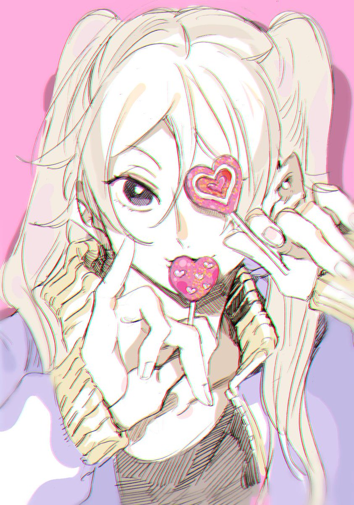

Ryuji Ayukawa
especialista em arte japonesa


Sobre
Ryuji Ayukawa, também conhecido como Yuka-chan, é colega de yatora e colega de clube de arte que o convidou para o clube de arte.
Yuka é especialista em arte japonesa.